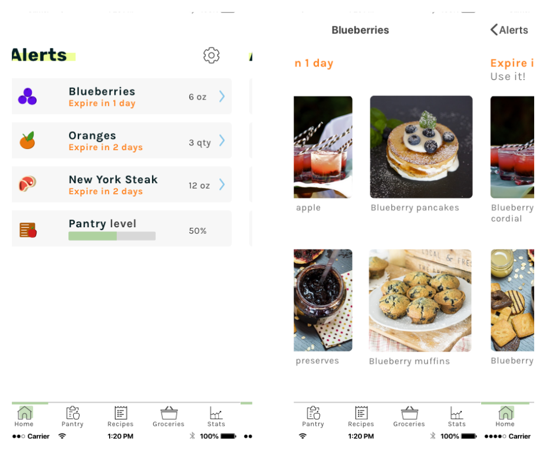

Prep
Prep is a food inventory tracking and meal prep application targeted to help users reduce food waste. Over a period of 3 weeks, I researched, designed, and determined the brand identity for this product.
Prep is a food inventory tracking and meal prep application targeted to help users reduce food waste. Over a period of 3 weeks, I researched, designed, and determined the brand identity for this product.
The average American household throws out 25% of the food they purchase, and a family of four throws out more than $1,600 a year in wasted food. These statistics alone show that there is a widespread food waste problem across the country. In my preliminary research, I found that users have a strong interest in reducing their food waste.
A suite of features that allows users to see when their food will expire and how to use it before it does, to create custom grocery list to prevent over buying, and to track food waste period over period.
I first performed a competitive analysis of three different competitors (No Waste, Fridgely, and Mealime), the former two are food inventory management applications, and the latter is a meal prep application.
Through the analysis of strengths and weaknesses, I found that there is a strong opportunity for a new food inventory management application, given the low market share held by the current players in the market. I also found that there is a strong opportunity to include a meal prep feature to allow users to create custom grocery lists from these planned meals, targeting the food waste problem at the front-end-- when users are purchasing their food.


of participants attribute their grocery waste to forgetting about their groceries on-hand and eating out.
of participants attribute their grocery waste to improper planning prior to grocery shopping.
of participants are interested in being able to search a variety of ingredients for a recipe to use up any residual food on-hand.
of participants are interested in an application that will alert them when their foods are likely to go bad and provide recipe suggestions to use them up.
of participants are interested in a feature that will consolidate planned recipes for the week and consolidate a custom a grocery list with just the required ingredients.
Given my background in data analytics, I love when conclusions are well supported by quantitative data, but there was a discrepancy in the survey results. In addition to asking whether participants were interested in the above features, I also asked them to rate these features, that way I could figure out which features to prioritize. However, the participants' positive responses highlighted above did not align with the summary of rankings provided. I really wanted to explore this further through in-depth, one-on-one interviews, discussed below.
NICOLE BURGESS
"Sometimes we only see our food once-- when we put it in the fridge."
CASEY JONES
"Cooking for one is a difficult guessing game that results in a lot of waste."
ALEX COERY
"I need help planning shopping trips since shopping and cooking for four can get crazy without proper planning."
Further interviews with user participants to establish these personas brought another desirable feature to light-- the ability to chat within shared folders (in addition to shared documents). This would allow collaborators of shared folders to chat within them to reduce redundancy and miscommunication. Following these interviews, I identified an opportunity to improve collaboration, and decided to steer the product in that direction.
Personas for this project represented a variety of roles, and were created based on interviews to understand user motivations, frustrations, and goals.
These personas include Nicole, who’s food gets lost and hidden in the refrigerator she shares with two other roommates. Casey, who struggles cooking for just herself when recipes and groceries aren’t usually tailored for one serving. And Alex, a stay at home mom that needs help planning her grocery store trips to minimize headache at the store.
Following user personas, I identified important tasks and user stories for the food inventory management product. High importance tasks were prioritized, and converted into user flows in Sketch to strategize the most effective paths for users.

Low-fidelity wireframes were created, tested, and underwent many different iterations before graduating to the high-fidelity stage. The first round of testing took place in Invision, where users were asked to complete a set of tasks.


Establishing the wireframes for the pantry screens were the most difficult part of this phase of the process. During the interviews conducted in the user research phase, a number of concerns were raised by interviewees on the input of pantry items. Concerns were mostly centered around their disdain for having to manually enter each individual item. Some interviewees also commented that scanning barcodes of individual items would not be helpful enough, and would deter them from entering pantry items.
I brainstormed ways to help users enter multiple items at a time, resulting in the receipt scanning function and the import grocery list function. Questions at the end of the step included whether these functions are helpful enough for users to regularly use this digital pantry, since the digital pantry food tracking system is the main tool of this product. I explored this as part of the usability tests performed with user participants. Results are discussed a few sections below.
Before jumping into the design and layout of the app, I established the overall look and feel of the brand. The colors, typography, and overall brand mood established in this step were eventually used in the final design mockups later on.
I started the brainstorm with a mind map exercise, and I already had a name in mind--”The Pantry”. I felt this was a solid name to start with, maybe lacking some creativity, but a great fallback in the event that my mind map exercise only brought out terrible ideas. From the mind map exercise, I liked two names, Savor and Prep. I ended up going with Prep because this application is meant to help users prepare before buying groceries, meal prep, and prepare to minimize waste. Check, check, check!
Next, I sketched logo ideas. I played around with strong lettering, abstract, and food inspired logos. I knew that I wanted a clean and simple logo, that was not ornate.
I played around with the lowercase “prep” logo, with the brand name spelled out. I looked at it as just the word, just the first “p” letter, in color, and different color variations. I really liked how the “p” letter stacked and offset, giving it almost a drop shadow look.
After playing with the logos, I really liked how the pink and orange logo looked together, giving it a retro but also modern look. However, the brand colors needed to emulate the brand, and while I enjoyed the pink and orange, the colors felt too feminine, and could potentially deter male users. I ultimately centered the color scheme around a green color, to represent freshness and growth. I selected an analogous color scheme represented by green, blue, and purple based colors.
Green is used as the main color to represent growth, abundance, and freshness. Purple is also used since the color is representative of ambition and wisdom, both of which are the product's intent to help users reduce waste. Blue is considered to be beneficial to the mind and body, and is relevant as Prep is a food centric application.

For this project, the style choices made were done so in order to create a clean and playful look. First and foremost, I wanted to make sure that the typefaces were very clean and easily readable--without ornate type features. This was mostly for usability purposes, since users could view recipes with long text within the application.
The Prep brand typeface is Rubik, a sans serif font with slight rounded corners. This typeface was chosen because of its modern, clean, and clear nature.
The complementary typeface is Karla, a grotesque sans serif typeface. This typeface was selected since it is sophisticated and clear, and the letter width and spacing also gives it a slight playful feel. It also pairs well with the Rubik brand typeface.
Rubik
ABCDEFGHIJKLMNOPQRSTUVWXYZ
abcdefghijklmnopqrstuvwxyz
1234567890
Karla
ABCDEFGHIJKLMNOPQRSTUVWXYZ
abcdefghijklmnopqrstuvwxyz
1234567890
I designed high fidelity mockups in Sketch to bring Prep to life. First, I applied color and images to the layout, including custom illustrations for the landing page and custom icons throughout the application. For the iOS design, I studied and carefully applied Apple’s Human Interface Guidelines.


Applying the color scheme developed in the branding phase. When I came up with the color palette for the brand, I pictured them against a white background. While working on the high fidelity mockups, I realized that the color palette did not pass a contrast check against a white background. I solved this problem but sticking to a mostly black and white for the type and icons, and using the colors in the color pallete as an accent to the icons.

The next two challenges came from user testing. Once the high fidelity mockups were completed, I tested the product on users. These users were asked to complete 7 tasks:
Users were able to complete these tasks without any issues, but there were further discussions and observations made that sparked change in the design.
When importing items to the pantry using a receipt, should all items be selected or deselected by default? I asked users about their buying patterns, how often their grocery receipts included items that would not be used in their own homes (i.e., purchasing food for the office or for parties). The users tested responded that most of the time, their receipts matched the food that would actually go into their kitchens. As such, the receipt items were all selected by default.
I was curious about whether the “add” button on the pantry screen should be lower, and more accessible for the user since it will most likely be a frequently used button on the screen. Responses were mixed, some liked that they would be able to select the “add pantry” button with just one hand. Others didn’t think it mattered since they might need two hands to complete the process (depending on which process they use). Given this feedback, I moved the button lower in order to make the beginning of the process to add a new item easier.
Furthermore, one user was clicking around the product, she made an insightful comment regarding the pantry list-- missing filter and sort options. I thought these would be a great addition since it would allow users to view their pantry items by expiration date or alphabetical order--both equally useful.

In order for users to mark pantry items as eaten, edit pantry items, or delete pantry items, the user has to swipe the pantry item to the left. I wasn’t sure if users would be able to perform this without proper context. I then decided to use contextual overlays, in hopes that it would be enough. Usability test participants agreed, and this was implemented across various different screens (home page, grocery list, and recipe book).
Through the testing and iterations discussed above, the screens and prototype were finalized.


Prep is a project that I am passionate about. I saw this problem in my own personal life (you should see the food that ends up getting thrown away during our bi-weekly purges), and also heard similar problems expressed in my social circles. There were so many things I was uncertain of in the early stages, and was glad to be able to leverage user testing in order to test the assumptions that I had made. This project was a humbling experience--it taught me to accept that I don’t know everything about users, and it would be foolish of me to assume that I do. Extensive user testing allowed me to test my assumptions about users, and at times my assumptions were validated, and other times they were refuted, but either way, this testing would lend to a better product.
In considering the further development of the current minimal viable product, I would like to implement functions that would allow better organization of pantry items into different sections. I would also like to consider partnerships with grocery stores to either offer coupons or to share user data with grocery stores, so they can also understand buyers' consumption habits to optimize food product servings or offerings. From a revenue perspective, these could become viable revenue streams through affiliate commission. I believe that these goals can be achieved through user research, wireframing, prototyping, and usability testing.